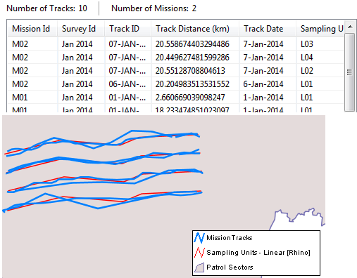

Exibe todas as trilhas de missão que correspondem aos filtros fornecidos. Os filtros incluem tipo de trilha, unidade de amostragem, missão e área e área aplicada à pista.
Consulta de Trilha da Missão x Consulta da Missão
As consultas da trilha da missão geram em um registro por trilha (e incluem propriedades da trilha). Os filtros são limitados às propriedades de rastreamento, missão e pesquisa (não podem consultar detalhes de observação). As Consultas de Missão geram em um registro por missão e fundem todas as trilhas em um único recurso no mapa. Os filtros incluem propriedades de missão e pesquisa, bem como detalhes de observação (filtros de modelo de dados).
Os resultados incluem um registro por trilha que corresponde aos filtros de consulta. Nenhuma informação de observação ou incidente é incluída nos resultados. Os detalhes da faixa são exibidos em uma janela tabular. As localizações de faixas são exibidas em uma janela do mapa.
 |
Consulta de rastreamento de missão de pesquisa |